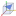
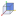
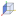
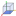
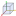

Menu bar
File menu

Fig. 5 File menu.
New Project opens a new aRTist scheme. This may also be done by pressing ctrl + n. The program will ask you if you want to save the changes on your current project.
 Open is used to search an existing project. Then select a project file in the dialog boxes that follow. Alternatively, press ctrl + o.
Open is used to search an existing project. Then select a project file in the dialog boxes that follow. Alternatively, press ctrl + o. Open Library is used to load something from the collection of example parts and projects. It can also be opened by pressing ctrl + l.
Open Library is used to load something from the collection of example parts and projects. It can also be opened by pressing ctrl + l. Save the current project to a single file. Alternatively, press ctrl + s.
Save the current project to a single file. Alternatively, press ctrl + s. Save As renames a project or changes the location of where you want to save it. Alternatively, press ctrl + shift + s.
Save As renames a project or changes the location of where you want to save it. Alternatively, press ctrl + shift + s.Reload External Files serves to check and update external dependencies (incorporated data files) of the current project. There you can choose file versions from the project or the file system in the dialog box that follow.
Last Directories shows a list of recently opened directories. By clicking on an entry, a file open dialog for this directory will pop up.
Open New Window starts a new, additional instance of aRTist.
Restart reboots the program. Before restarting, the program will ask you if you want to save any changes to your current project.
Quit terminates the program. Before quitting the program will ask you if you want to save any changes on your current project. Alternatively, press ctrl + q.
{kind=link}
Edit menu

Fig. 6 Edit menu.
 Undo erases the last change done to the project reverting it to its previous state. Alternatively, press ctrl + z.
Undo erases the last change done to the project reverting it to its previous state. Alternatively, press ctrl + z. Redo reverses the Undo or advances the buffer to its former state. Alternatively, press ctrl + y. The opposite of Undo is Redo. The Undo and Redo commands restrict you to an incremental sequence of changes.
Redo reverses the Undo or advances the buffer to its former state. Alternatively, press ctrl + y. The opposite of Undo is Redo. The Undo and Redo commands restrict you to an incremental sequence of changes.History displays the chronology of your recent actions and lets you revert back to any previous state. Alternatively, press ctrl + h to open the history.
 Cut removes parts from the assembly and keeps them in the clipboard. In the scene or in the Assembly list (in the Parameter panel), you can left-click to select any part(s) that you want to cut. Select multiple parts by keeping the ctrl key pressed on the keyboard.
Cut removes parts from the assembly and keeps them in the clipboard. In the scene or in the Assembly list (in the Parameter panel), you can left-click to select any part(s) that you want to cut. Select multiple parts by keeping the ctrl key pressed on the keyboard. Copy can create a duplicate of the selected part(s). First, select the part(s) you want to copy by using the Ctrl key on the keyboard and click on them with the left mouse either in the scene or in the Assembly List (of Parameter Panel). The selected parts are kept in the clipboard.
Copy can create a duplicate of the selected part(s). First, select the part(s) you want to copy by using the Ctrl key on the keyboard and click on them with the left mouse either in the scene or in the Assembly List (of Parameter Panel). The selected parts are kept in the clipboard. Paste appends parts from the clipboard to the Assembly List.
Paste appends parts from the clipboard to the Assembly List. Delete removes selected parts from the Assembly List.
Delete removes selected parts from the Assembly List.
Geometry menu

Fig. 7 Geometry menu.
 Center New Parts positions newly loaded parts (.stl or .ply files) at the origin of the global coordinate system, if activated. If deactivated, new parts will be placed at their native, original coordinates.
Center New Parts positions newly loaded parts (.stl or .ply files) at the origin of the global coordinate system, if activated. If deactivated, new parts will be placed at their native, original coordinates.Isolate deactivates all parts in the scene except the selected ones. Alternatively you can deactivate or activate a part with a click on the
 eye symbol at the Parameter Panel → Setup → Assembly List.
eye symbol at the Parameter Panel → Setup → Assembly List.Activate/Deactivate selected item(s) of the assembly. If you deactivate an item, it will be ignored during simulation and be nearly invisible in the scene. Please note that you have to select the respective item first. Otherwise you may use the
eye symbol in the Assembly List of the Parameter Panel to achieve the same effect.Set Material changes the material of a selected part. As an alternative, you may click on the material name of a part in the Assembly List of the parameter panel to open a drop-down menu with the same options.
 Union,
Union,  Intersection and
Intersection and  Difference can be used to create complex parts in the scene. For these commands, parts have to be created (e.g. with the
Difference can be used to create complex parts in the scene. For these commands, parts have to be created (e.g. with the  Solid module) and placed in the scene, so that they overlap. Then, select parts by using the Ctrl key on the keyboard and click on them with the left mouse. The first selected part can be recognized by its yellow corners. All subsequent parts will be marked with white corners. The so-called Geometry Manipulation commands are explained more detailed in another section.
Solid module) and placed in the scene, so that they overlap. Then, select parts by using the Ctrl key on the keyboard and click on them with the left mouse. The first selected part can be recognized by its yellow corners. All subsequent parts will be marked with white corners. The so-called Geometry Manipulation commands are explained more detailed in another section.- Union joins two or more parts. The order of selection is not important.
- Intersection creates a new part from the overlapping areas of at least two parts. Everything else will be removed. The order of your selection is not important.
- Difference is used to create a new part from the difference of at least two other parts. By selecting this command the order of selection will be important for the result. The first selected part (yellow corner) is the minuend and all other selected parts (white corners) are subtracted from the first part.
 Arrange is used to put parts in order to the assembly. Select the parts which have to be arranged, and activate this command. In the opening dialog box four options: none, -, center, + are available for each of the three axes. The parts will be aligned with the first selected part.
Arrange is used to put parts in order to the assembly. Select the parts which have to be arranged, and activate this command. In the opening dialog box four options: none, -, center, + are available for each of the three axes. The parts will be aligned with the first selected part. Pick Destination moves item(s) from one point of the scene view to another. Click with the left mouse on the desired destination to relocate selected item(s).
Pick Destination moves item(s) from one point of the scene view to another. Click with the left mouse on the desired destination to relocate selected item(s).
{kind=link}
{kind=link}
{kind=link}
{kind=link}
Modules menu
{kind=link}
Fig. 9 Modules menu.
Manage Modules… controls the activation of the installed modules. New modules can be installed from aRTist package files (
*.artp).CtScan module facilitates the simulation of series of projections for virtual X-ray computerized tomography (CT) with circular trajectory. The module includes Feldkamp reconstruction and volume rendering. For more details see CtScan description.
DetectorCalc module will add new detector models to aRTist. Based on scintillator material and thickness the detector properties are modelled and adjusted by a reference shot of the modelled detector. For more information see DetectorCalc section.
DigRad module will add new detector models to aRTist. It is intended to describe individual digital detectors by measured values according to detector characterization standards. For more information see DigRad section.
ImageViewer module shows the simulation result, the virtual projections. The different settings and functions of ImageViewer will be explained in section ImageViewer.
LogViewer module displays internal messages by aRTist and its components.
McRay module is the interface to the Monte Carlo code McRay, coming with aRTist. Usually McRay is controlled at the Scattering. This module provides additional options for experienced users.
- Solid module presents a dialog to generate simple parts (virtual objects) of any sizes and add these to the scene.
TomoSynth module provides another dialog to setup a simulation series. The Laminography tab is the easy interface to define a scanning movements of tube and detector, while the Advanced tab can be used to control variations for any part in the scene.
{kind=link}
Tools menu
{kind=link}
Fig. 10 Tools menu.
Show Console opens the aRTist console, a dialog window with a TCL command shell. This is the command-line interface of aRTist. Status and debug information can be observed here including potential warnings and error messages at simulation runs.
Show VTK Log calls module LogViewer to displays internal messages by aRTist and its components.
Enable remote access opens a TCP/IP port to control aRTist from another program, e.g. Python.
Opening Angle calculates the angular aperature of the cone beam enclosing the detector at the present setup. It will be displayed at the status bar.
Attenuation Data opens a viewer of the energy-dependent attenuation coefficients used by the program.
Detector Properties opens a viewer of the currently used detector model.
Image Viewer provides the menu bar of the image viewer module (lacking a nice way to directly attach it to the module window).
 Settings opens the preferences dialog.
Settings opens the preferences dialog.
{kind=link}
{kind=link}
View menu
{kind=link}
Fig. 11 View menu.
 Zoom to Selection will render the selected parts over the full extent of the scene view. If no part is selected, the view is adjusted to show the entire setup.
Zoom to Selection will render the selected parts over the full extent of the scene view. If no part is selected, the view is adjusted to show the entire setup. Default View realign the scene view to look from the top right.
 View along X,
 View along Y,
 View along Z realign the scene view to look in the direction of the coordinate axes. Calling the function again rotates the view in the opposite direction.
Pick Focal Point will allow to pick an part and shift the view to the center of the picked part. From mow on the scene will rotate around the position of the picked part.
 Orthographic Projection toggles orthographic and perspective projection mode.
Toggle Axes will control the visibility of local coordinate axes at the selected parts.
Toggle Bounding Box will control the visibility of the bonding box at the selected parts.
Toggle Edge Visibility will control the visibility of triangle edges at the selected parts.
Toggle Wireframe toggles wireframe and solid rendering of the selected parts.
Multiple views switches the division of the scene view to show three additional sub-views, each with a different viewing direction.
Views Follow Main Camera toggles the synchronous movement of the sub-views.
Show Source Cone toggles the display of a transparent cone representing the X-ray beam.
Show Orientation toggles the display of a orientation marker at bottom lift of the scene view.
Stereo Rendering toggles stereo rendering, e.g. by red/cyan anaglyph imaging. See related parameters under Settings.
Level Of Detail Rendering
Fullscreen toggle full-screen mode of main program window.
Toggle Toolbar Visibility switches the toolbar on and off.
Toggle Dock Visibility switches the docking area on and off.
Toggle Setup Visibility switches the parameter panel on and off.
{kind=link}
{kind=link}
{kind=link}
{kind=link}
{kind=link}
{kind=link}
{kind=link}
{kind=link}
{kind=link}
{kind=link}
Help menu
{kind=link}
Fig. 12 Help menu.
 Show Inline Help activates the inline help where available, e.g. on the Scattering tab or at the material editor.
Show Inline Help activates the inline help where available, e.g. on the Scattering tab or at the material editor.User Guide opens the documentation file (PDF).
Online Guide opens the online handbook (https://bamresearch.github.io/aRTist-handbook).
Homepage opens aRTist’s homepage (http://artist.bam.de).
License Information opens a dialog window with the actual license status. Here you will also find information on license activation and applying for a demo license. See also License activation.
About aRTist opens a dialog window with information about the software itself and its version, installed modules and included third-party software.